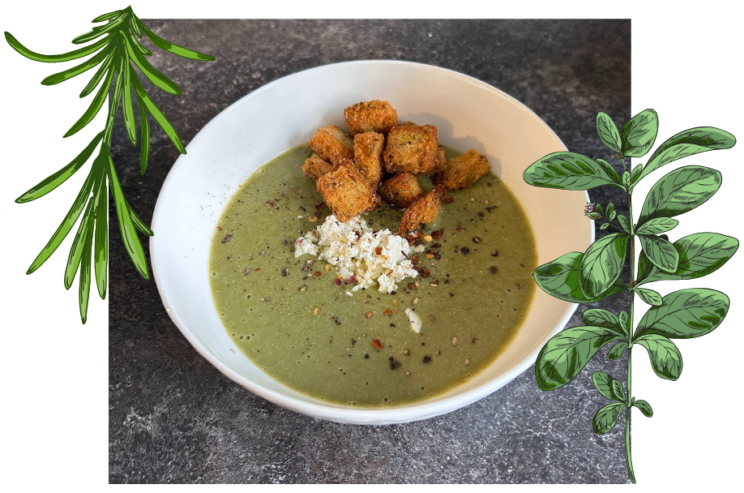
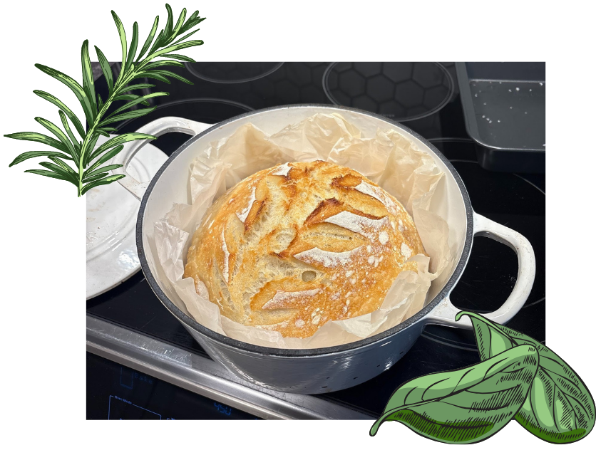

B
Broccoli Feta Soup
Ingredients
- 1 liter of chicken or vegetable broth or 4 cups of homemade broth
- 2 Heads of broccoli (or one bag of frozen broccoli)
- 3–4 Big garlic cloves
- 2 sticks of celery (around 150 grams)
- 125 grams of feta
- 1 tablespoon of oil
- 1 tablespoon of butter
- Salt and pepper to taste
Steps
- On medium heat, add the oil and butter.
- Roughly chop onions, garlic, and celery. Cook until onions are translucent. Add broccoli and cook briefly.
- Cover veggies with broth, bring to a boil, then simmer 30 minutes.
- Add feta, salt, and pepper in the last 5 minutes.
- Blend and enjoy!

R
Kalbi Ribs
Ingredients
- 1 Rack of ribs
- ½ Jar of premade Kalbi sauce
- 3 inches of fresh ginger
- 4–5 cloves of fresh garlic
- Green onions to taste
- 1 White onion
- 4 Celery stalks
- 2 Tablespoons soy sauce
- 1 Tablespoon chili garlic paste
Steps
- Roughly cut green onions, white onion, celery, garlic, and ginger.
- Add vegetables, Kalbi sauce, soy sauce, and chili garlic paste to a large bag.
- Remove membrane from ribs and place ribs in the marinade bag.
- Marinate 4–24 hours.
- Preheat oven to 250°F.
- Place ribs and marinade on a foil‑lined baking sheet.
- Cook 3–4 hours, flipping every 30 minutes.
- Broil 2–3 minutes uncovered.
- Enjoy!

S
Sourdough Loaf
Ingredients
- 125 grams starter
- 325 grams water
- 500 grams flour or bread flour
- 10 grams salt
- Rice flour (optional)
Steps
- Mix starter, water, salt, and flour. Rest 1 hour.
- Do 4 sets of stretch‑and‑folds, 30 minutes apart.
- Shape loaf, rest 15 minutes.
- Place in banneton, cover, refrigerate overnight or up to 3 days.
- Preheat oven to 450°F.
- Score bread and place in Dutch oven on parchment.
- Bake 40 minutes covered, then 10–15 minutes uncovered.
- Cool 1–2 hours before slicing.
